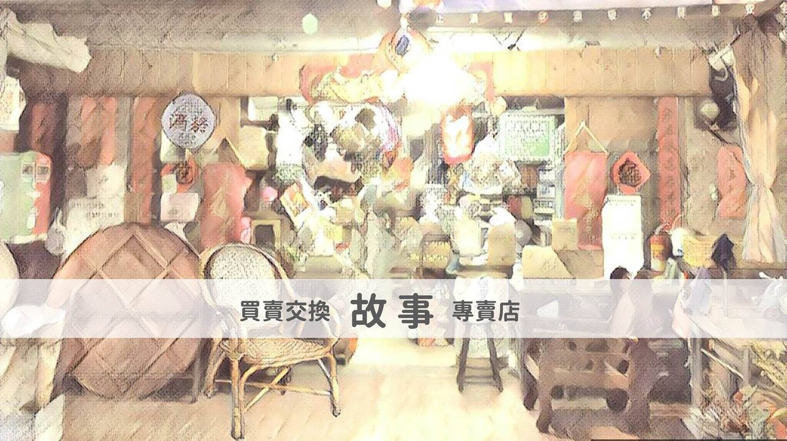

語巫是誰？2017-09-01
語巫是誰？2017-09-01
語巫要做甚麼？2017-09-01 語巫怎麼做？2017-09-01
語巫怎麼做？2017-09-01 聯繫語巫2017-09-01
聯繫語巫2017-09-01 Opening 故事柑仔店2017-09-04
Opening 故事柑仔店2017-09-04 Artvision藝視創意影像有限公司 文案合作2017-09-18
Artvision藝視創意影像有限公司 文案合作2017-09-18- HERO STORY英雄故事 專欄合作2017-11-24
- 松鼠文化 出版合作2017-12-18
- 午夜快車 品牌故事行銷2017-12-18
- 臺北醫學大學──說故事工作坊開課(2017/10/16-11/2)2017-12-21
- 臺北醫學大學──敘事工作坊開課(2017/10/16-10/26)2017-12-21
- 來「聽」故事──女人難為專欄一〈小三的悲傷〉2018-06-22
- 來「聽」故事──女人難為專欄二〈小資OL〉2018-06-29
- 來「聽」故事──女人難為專欄三〈女同志〉2018-07-05
- 來「聽」故事──女人難為專欄四〈婆媳關係〉2018-07-14
- 來「聽」故事──女人難為專欄五〈女人到婦人〉2018-07-20
- 來「聽」故事──女人難為專欄六〈失婚〉2018-07-27
- 來「聽」故事──女人難為專欄七〈窮女兒〉2018-08-03
- 來「聽」故事──女人難為專欄八〈阿嬤的牽掛〉2018-08-10
- 《故事柑仔店2──被偷的父親》即將上市~~2021-02-03
- 語屋新書快報《百年藥櫃九帖湯》出版囉~~2021-02-08
- 你想的故事都在這，來享受五分鐘的洗禮吧──《故事柑仔店2》出版啦！2022-02-10